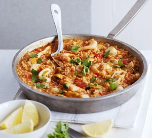

Paella

Description
Paella is a celebrated Spanish dish that epitomizes the rich
culinary traditions of Valencia and the Mediterranean coast.
This colorful and aromatic creation features saffron-infused
rice cooked to perfection, mingling with an array of fresh
ingredients such as succulent seafood, tender chicken, and
savory chorizo. Enhanced with a vibrant mix of vegetables
like bell peppers, peas, and tomatoes, paella is traditionally
prepared in a large, shallow pan, allowing the flavors to meld
beautifully and the rice to develop a delightful crust known as
"socarrat" at the bottom. Often garnished with lemon wedges and
fresh herbs, paella offers a symphony of textures and tastes that
transport diners to the sun-drenched landscapes of Spain. Whether
enjoyed at a festive gathering or a leisurely meal, paella stands
as a testament to Spain’s culinary artistry and communal spirit.
Ingredients
- tbsp olive oil
- 1 onion, chopped
- 1 tsp each hot smoked paprika and dried thyme
- 300g paella or risotto rice
- 3 tbsp dry sherry or white wine (optional)
- 400g can chopped tomatoes with garlic
- 900ml chicken stock
- 400g frozen seafood mix, defrosted
- 1 lemon, ½ juiced, ½ cut into wedges
- handful of flat-leaf parsley, roughly chopped
Steps
-
Heat the olive oil in a large frying pan or wok.
Add the onion and soften for 5 mins.
-
Add the smoked paprika, thyme and paella rice, stir for 1 min,
then splash in the sherry, if using. Once evaporated, stir in
the chopped tomatoes and chicken stock.
-
Season and cook, uncovered, for about 15 mins, stirring now
and again until the rice is almost tender and still surrounded
with some liquid.
-
Stir in the seafood mix and cover with a lid. Simmer for 5 mins,
or until the seafood is cooked through and the rice is tender.
Squeeze over the lemon juice, scatter over the parsley and
serve with the lemon wedges.